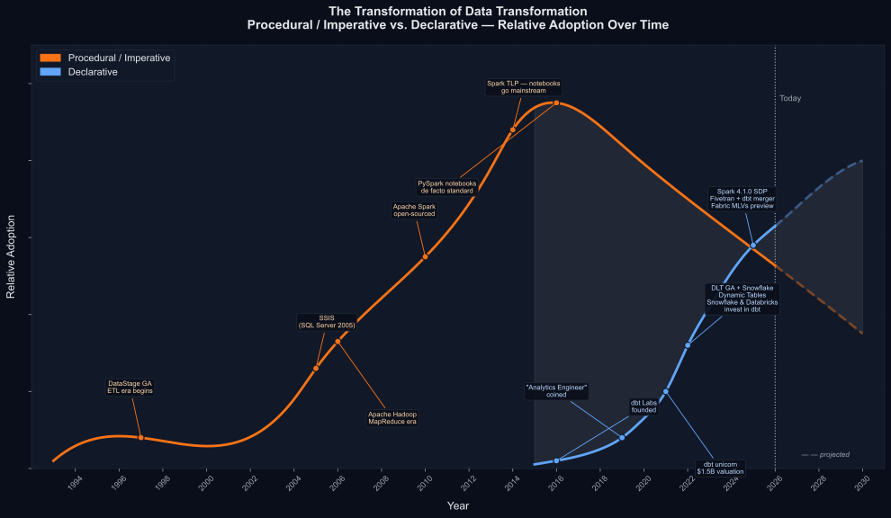

If you've been paying attention, you'd have noticed a distinct shift in data engineering - away from imperative, towards declarative.
What started with dbt in 2016 has since spread across the full ELT stack - on the transformation side: Databricks Delta Live Tables, Snowflake Dynamic Tables, Microsoft Fabric Materialized Lake Views, and Spark Declarative Pipelines; on the ingestion side: Fivetran, Airbyte, and Fabric's Copy Job.
Data engineering isn't alone here. Infrastructure as code made this move years ago - Terraform, Kubernetes, Helm. We're following a pattern software engineering set long before us.
The appeal for human engineers is straightforward. In an imperative setup, every loading pattern - append-only, upsert, merge, SCD Type 2 - means writing and maintaining the logic yourself.
In a federated model, where multiple domain teams each own their own pipelines, this compounds quickly: how do you ensure the finance team's SCD Type 2 logic matches the central data team's?
Declarative frameworks remove that problem. Say "I want SCD Type 2" and the engine handles the rest - the same tested, version-controlled implementation for every team.
What started as a way to abstract complexity away from engineers has, coincidentally, done the same for AI agents.
As a rule of thumb, I'd rather spend engineering effort on business logic than rebuilding framework capabilities that already exist elsewhere. Everything else should be a well-known public framework - one that AI tools were trained on.
If you were building a house, would you tell the bricklayer how and where to lay each brick, how to mix the mortar - or would you just say "I want brick veneer"?
It's a question I've been working through in practice - and Microsoft Fabric is where I've been putting it to the test.
1. What: Imperative vs. Declarative
Procedural programming (a sub-class of imperative) - the way most data engineers have worked for years - means step-by-step instructions.
Read this table, filter these rows, join here, write the output there. You own the order, the control flow, and every decision in between.
Declarative programming flips it. Describe what the output should look like; the system works out how to get there.
One thing worth clarifying: SQL has always been declarative. SELECT * FROM orders WHERE status = 'pending' describes what you want, not how to retrieve it. Early ETL tools like DataStage and Informatica had visual drag-and-drop interfaces that were also declarative in spirit.
The shift we're talking about isn't SQL the language. It's the framework built around SQL - how model dependencies get managed, how testing gets enforced, how documentation stays current, whether your business logic is tied to a specific execution engine. That's what's changed.
Take SCD Type 2. Imperatively, you write the logic yourself: join new data to the existing table on the business key, check whether tracked columns changed, end-date the old row, insert a new version.
In PySpark, that's roughly 30 lines of Delta merge logic - and you own every edge case.
Declaratively:
snapshots:
- name: customers
config:
unique_key: customer_id
strategy: timestamp
updated_at: updated_at
Run dbt snapshot. The framework handles the comparison, the end-dating, and the insert. You declared the outcome - track history on this table using this key - and the system worked out the how.
2. When: A Decade in the Making
| Date | Procedural / Imperative | Declarative |
|---|---|---|
| Jan 1997 | DataStage GA - hand-coded ETL jobs become the enterprise standard | |
| 2005 | SSIS ships with SQL Server 2005 - drag-and-drop pipelines dominate Microsoft shops | |
| Apr 2006 | Apache Hadoop - teams write Java MapReduce jobs to transform data at scale | |
| 2009 | Apache Spark created at UC Berkeley AMPLab | |
| 2010 | Apache Spark open-sourced - Python replaces Java, but logic stays procedural | |
| 2013 | Databricks founded; Spark donated to Apache - PySpark notebooks begin replacing ETL tools | |
| Feb 2014 | Spark Top-Level Apache Project - notebooks become the default transformation environment | |
| 2016 | PySpark notebooks are the de facto T layer across cloud data platforms | Fishtown Analytics (later dbt Labs) founded |
| Jan 2019 | Notebooks remain dominant for most teams | "Analytics Engineer" coined - naming the practitioner role the new frameworks were enabling |
| Nov 2020 | Notebooks still the default at most organisations | |
| May 2021 | Databricks previews Delta Live Tables at Data + AI Summit | |
| Jun 2021 | Declarative transformation reaches unicorn status - $1.5B market validation | |
| Feb 2022 | $222M raised at $4.2B - Snowflake and Databricks among investors | |
| Apr 2022 | Databricks Delta Live Tables reaches GA | |
| Jun 2022 | Snowflake Dynamic Tables debut at Data Cloud Summit | |
| May 2025 | Notebooks remain the default for the majority of teams | Microsoft Fabric previews Materialized Lake Views at Microsoft Build |
| Jun 2025 | Databricks contributes Spark Declarative Pipelines (SDP) to Apache Spark - a new open-source framework informed by years of running DLT in production | |
| Oct 2025 | Fivetran merges with dbt Labs - EL and T combine at ~$600M ARR | |
| Dec 2025 | Apache Spark 4.1.0 ships with SDP as a headline feature | |
| Mar 2026 | Microsoft Fabric Materialized Lake Views reach GA at FabCon Atlanta |
The two columns overlap, which is intentional. Declarative didn't replace procedural overnight - it grew alongside it. PySpark notebooks didn't stop being used when dbt launched in 2016, and they haven't stopped today.
The direction of travel for new work is what's changing, and the cost of staying put is rising.
The February 2022 entries are worth a closer look. Snowflake and Databricks both invested in dbt Labs - and then, within months, shipped their own native declarative tools. They backed the independent framework to validate the market, then built platform-native versions of the same idea.
Six weeks apart! That's not a coincidence.

3. Why: The Cost of Procedural at Scale
The problem with notebooks
PySpark notebooks have their place - ML feature engineering, complex Python logic, bespoke ingestion that dedicated EL tools don't cover. Plenty of teams use Fivetran, Azure Data Factory, or Airbyte for ingestion and never open a notebook for it.
And notebooks have worked fine for transformation too. Teams have been shipping production pipelines with them for years. The question isn't whether notebooks work - they do - it's whether declarative frameworks do it better.
For the transformation layer, here's how they compare:
| Procedural notebooks | Declarative frameworks | |
|---|---|---|
| Dependencies | Execution order implied by cell position. Downstream impact when you change an upstream model is yours to track manually. | You declare relationships between models; the framework determines execution order automatically. |
| Error detection | Fails at runtime - a broken column reference, a schema change, a typo in a join key only surfaces when the job actually executes. | Errors surface at compile time, before a single row is processed. |
| Testing | Whatever someone remembered to write. No standard framework, no consistent enforcement. | Data quality constraints declared alongside the model definition. Run automatically. |
| Documentation | Wikis and comments go stale as code evolves. No mechanism to keep them in sync. | Generated from the same source as the logic. Always in sync. |
| Version control | Notebooks stored as JSON. Diffs are noisy and hard to review - cell metadata and output state mix with logic. Merge conflicts in multi-developer teams are painful. | Plain SQL files. Clean diffs. Meaningful code review. |
| Portability | Business logic coupled to the execution engine - PySpark DataFrames don't travel. | Portable SQL. Swap the adapter or platform; the logic stays intact. |
At small scale, notebooks are perfectly manageable. As the codebase grows and more people touch it, the gaps in the left column compound - and that's where declarative frameworks pull ahead.
Why every major platform arrived at the same answer
The clearest evidence that this shift is real isn't any one tool - it's that competing platforms appear to have arrived at the same conclusion independently.
- Snowflake built Dynamic Tables. Databricks built Delta Live Tables (now Lakeflow). Microsoft built Materialized Lake Views.
- In February 2022, Snowflake and Databricks both invested in dbt Labs - then shipped their own competing native tools within months.
- In October 2025, Fivetran - the leading EL platform - merged with dbt Labs at ~$600M ARR. The company owning Extract and Load merged with the company owning Transform.
- In June 2025, Databricks contributed Spark Declarative Pipelines (SDP) to Apache Spark - not a straight open-sourcing of DLT, but a new framework informed by years of running DLT in production. It shipped as a headline feature in Spark 4.1.0 in December 2025.
These aren't coordinated moves. When competitors build the same thing without talking to each other, that's usually a signal the underlying idea is right.
Why AI amplifies the shift
There's one more layer that wasn't in play when dbt launched in 2016.
LLMs don't know your custom metadata framework. They don't know your in-house state store or your bespoke pipeline config. You describe your schema and hope the model infers the rest.
Declarative frameworks give AI a structural safety net on top: the server validates the declaration before execution begins. Most major declarative tools ship with some form of dry-run validation:
- dbt:
dbt-dry-run- validates your models compile and resolve without running them - Spark Declarative Pipelines:
--dry-runflag - checks pipeline structure before execution - Kubernetes / Helm:
--dry-runon apply and install
When an LLM generates declarative config and gets something wrong, the framework catches it at compile time - before a single row moves. With imperative notebook code, the same mistake only surfaces at runtime.
In the agent-based workflows I've been experimenting with, this structural property matters more than I initially expected. The constraint that the only custom code should be your business logic isn't just a design preference - it's what makes the whole thing debuggable when something goes wrong.
4. How: Moving Forward
Scope first
The declarative shift is happening across the whole ELT stack, but the tooling is most mature in the transformation layer.
Ingestion is catching up. Fivetran, Airbyte, Fabric's Copy Job, and Lakeflow Connect all follow the same principle: declare what you want moved and where, and the platform handles execution, schema changes, and incremental state.
Python and PySpark still have a role where they're genuinely needed: complex API ingestion, streaming, ML inference, iterative algorithms, deeply nested data. Declarative tools don't try to replace them there.
The transformation layer is where the shift is most pronounced and the tooling most mature - stable, SQL-expressible business logic turning landed data into clean, trusted models. That's where notebook costs compound most visibly, and where the declarative payoff is clearest.
The rest of this series is focused on Microsoft Fabric specifically - not because it's the only viable platform, but because it's where I've been doing the work. And the honest answer to whether it's production-ready is more nuanced than most of the marketing material suggests.
The declarative spectrum
Not all declarative tools are declarative in the same way.
Interface-level declarative - dbt and similar frameworks
You describe the desired end state; the framework handles dependency resolution, materialisation, and testing. Worth being transparent: at the execution level, dbt runs an imperative sequence of SQL mutations against a mutable database. It's declarative in what you write, not necessarily in how it executes - think Makefiles. For most teams moving away from notebooks, this is the right starting point.
Execution-level declarative - SQLMesh
SQLMesh takes a more rigorous approach. MODEL blocks are designed to declare properties, dependencies, update methods, and schedules directly in code. Its plan/apply workflow aims to show exactly what will change before anything executes, and virtual environments are intended to allow pipeline changes to be tested in isolation. For teams that want declarativeness at the execution level - not just the interface - it's worth evaluating, though Fabric-specific support is limited at time of writing.
Platform-native declarative - Dynamic Tables, Lakeflow, MLVs, Spark SDP
If you're committed to a single platform, the native tooling is worth a look. No framework to install, no adapter to configure. The trade-off is portability - these tools are tied to their host platform in ways open-source frameworks aren't.
One caveat across all of the above - leaky abstractions
Declarative tools abstract away execution, which is mostly the point. But abstractions leak, and when they do you feel it. You give up some granular control - specific compute configurations, spot instance selection, fine-grained performance tuning. For most transformation workloads that doesn't matter. For teams with complex performance or cost requirements, it's worth knowing upfront: you're trading control for convenience, and occasionally you'll hit the edges of what the abstraction covers.
Where to start
| If you're on… | Worth considering… |
|---|---|
| SSIS / legacy ETL tools | A SQL-first declarative framework - dbt Core is the most widely adopted starting point. The jump is significant but the payoff is proportional. |
| PySpark notebooks on Databricks | Databricks Lakeflow (platform-native, minimal setup) or an open-source framework if portability matters |
| PySpark notebooks on Microsoft Fabric | Fabric's native Materialized Lake Views for low friction, or dbt for richer testing, CI/CD, and portability |
| Already on dbt, want more rigour | SQLMesh - plan/apply, virtual environments, execution-level state management |
You don't need to migrate everything at once. The typical pattern is to start with one domain - a staging layer, a single subject area - run it alongside existing notebooks, and compare. The difference tends to be obvious pretty quickly.
Notebooks don't disappear - they just get used where they're actually needed: ingestion, streaming, ML, complex Python logic. Going back to the brick veneer analogy: saying you want brick veneer doesn't mean the bricklayer goes home. They're still on site - laying bricks where bricks need to be laid.
Coming Next
Over the past few months I've been experimenting with what declarative ELT actually looks like in Microsoft Fabric. Some aspects work surprisingly well. Others expose gaps that require augmentation with external tooling. In the next article I'll walk through that experiment, the trade-offs I encountered, and what I learned.
- Brad Coles
Sources
- IBM InfoSphere DataStage history: Wikipedia
- SQL Server Integration Services history: Wikipedia
- Apache Hadoop history: Wikipedia
- Apache Spark history: Wikipedia
- "Analytics Engineer" origin: dbt Labs blog
- dbt Labs funding history: Tracxn
- Databricks Delta Live Tables GA: Databricks blog, April 2022
- Databricks contributes SDP to Apache Spark: Databricks blog, June 2025
- Snowflake Dynamic Tables: Snowflake blog, August 2022
- Microsoft Fabric MLVs announced: Microsoft Fabric blog, May 2025
- Apache Spark 4.1.0 release: Apache Spark News
- Spark Declarative Pipelines programming guide: Apache Spark docs
- Fivetran + dbt Labs merger: Fivetran press release, October 2025
- Databricks on procedural vs. declarative: Databricks docs
- dbt's declarative approach: Migrating from stored procedures - dbt Labs
- SQLMesh as a declarative framework: Orchestra, Synq dbt vs SQLMesh comparison
- "dbt isn't declarative": Jenny Kwan
Brad Coles is a Senior Consultant and Data Engineering Capability Lead at Synechron Australia, specialising in Microsoft Fabric and modern data platform engineering. Connect on LinkedIn.
If this article helped you, click here to see some ways you can support me.